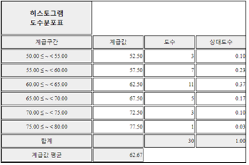
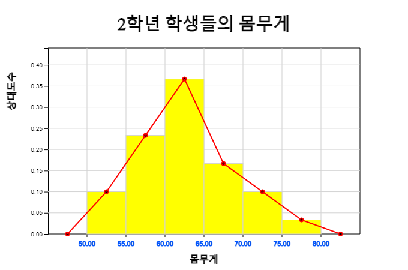
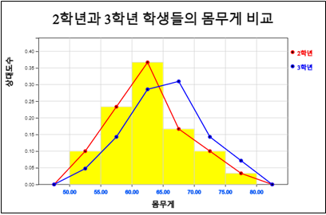
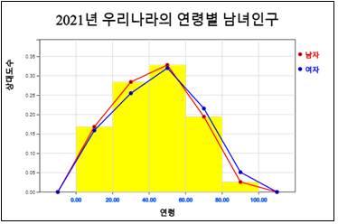

1) 미세먼지농도 자료수가 28개나 있는데 전반적인 자료의 분포를 어떻게 쉽게 표현할 수 있을까?
2) 우리나라는 미세먼지 농도가 36(㎍/\(m^3\))을 넘으면 '나쁨'으로 으로 평가하는데
2월 중 며칠이나 있을까?
위의 예에서 미세먼지농도를 39, 18, 20, 과 같이 측정하였는데 이와 같이 자료를 수량으로 나타낸 것을 변량이라 한다.
<자료 3.1>과 같이 숫자로 된 자료는 십진법을 사용하기 때문에 각각의 십 자릿수에 해당하는 자료를 모아
다음과 같은 표로 정리할 수 있다. 즉, 첫 번째 자료 39는 십 자릿수가 '3' 이므로 이 자료를 세 번째 행에 적고,
그 다음 18은 십 자릿수가 '1'이므로 첫 번째 행에 적는다. 같은 방법으로 모든 자료를 정리하면 [표 3.1]과 같다.
[표 3.1] 미세먼지농도를 십의 자릿수에 대해 정리한 자료
십의 자릿수
자료
1
18 16 18 16 15 13 17 18 11 14
2
20 22 23 24 25 24
3
39 37 30 34
4
44 42 46
5
59 53
6
7
76 77 76
[표 3.1]에서 각각의 행(십 자릿수)은 '10㎍/\(m^3\) 이상 20㎍/ 미만', '20이상 ~ 30미만', ...
' 70이상 ~ 80미만'과 같은 구간을 의미한다. 이 표에서 각각의 행에 나타난 자료의 일 자릿수만을
오름차순으로 정렬한 [표 3.2]를 줄기와 잎 그림이라 부른다. 줄기와 잎 그림에서는 십 자릿수를 나무의
'줄기', 일 자릿수를 '잎'으로 부른다.
[표 3.2] 미세먼지농도의 일 자릿수를 오름차 순으로 정리한 줄기와 잎 그림
십의 자릿수
자료
1
1 3 4 5 6 6 7 8 8 8
2
0 2 3 4 4 5
3
0 4 7 9
4
2 4 6
5
3 9
6
7
6 6 7
[표 3.2]와 같은 줄기와 잎 그림을 관찰하면 미세먼지 농도가 \(m^3\)당 '10㎍ 이상 20㎍ 미만'인 날이 제일 많고,
그 다음은 '20㎍ 이상 30㎍ 미만'임을 쉽게 알 수 있다. 그리고 자료가 오름차순으로 정렬이 되어있어
미세먼지농도가 '나쁨'인 36㎍ 이상인 날을 쉽게 세어 볼 수 있는데 28일중에서 미세먼지농도가 '나쁨'인
수준이 10일이나 되어 심각한 공해 문제임을 잘 살펴볼수 있다.
자료가 많을 경우 이와 같이 수작업으로 줄기와 잎 그림을 그리는 것은 시간도 많이 걸리고 쉽지 않다.
『eStat』소프트웨어를 이용하여 줄기와 잎 그림을 그려보자.
🎲 실습 3.1
『eStat』을 이용하여 (자료 3.1) 미세먼지 농도에 대한 줄기와 잎 그림을 그려보자.
풀이
『eStatM』 '줄기와 잎 그림'의 '자료 입력'에 미세먼지농도 자료를 입력하고 (전자책에서 자료를 복사하여 붙여넣기를 해도 됨) '주 제목'에
원하는 그림 제목을 입력한다.
[실행] 버튼을 클릭하면 <그림 3.1> 아래와 같은 줄기와 잎 그림이 나타난다.
<그림 3.1> 미세먼지 농도의 줄기와 잎 그림
🎲 실습 3.2
우리나라의 2월 서울의 일별 최저기온을 조사하나 다음과 같다. 『eStat』을 이용하여
일별 최저기온에 대한 줄기와 잎 그림을 그려보자.
『eStatM』 메뉴에서 '줄기와 잎 그림'을 선택하면 <그림 3.2>와 같은 자료입력창이 나타난다.
'자료 입력'에 일별 최저기온 자료를 입력하고 '주 제목'에 원하는 그림 제목을 입력한다.
[실행] 버튼을 클릭하면 <그림 3.2>와 같은 줄기와 잎 그림이 나타난다.
온도는 소수점과 음수가 있어 마지막 숫자를 잎으로 하여 줄기와 잎 그림을 그린다.
<그림 3.2> 서울의 일별 최저기온의 줄기와 잎 그림
⏱ 과제 3.1
다음은 2016년 현재 서울의 25개 행정구별 자전거 전용 도로 길이에 대한 자료이다.
『eStat』을 이용하여 줄기와 잎 그림 등을 그려 분석하라.
1) 자료수가 30개나 되는데 학생들 몸무게의 분포를 어떻게 쉽게 그래프로 표현할 수 있을까?
2) 학생들 몸무게가 70kg이상 75kg미만인 학생의 수가 얼마나 될까?
위와 같은 몸무게 자료의 전반적인 분포를 보기위해서는 앞에서 살펴본 줄기와 잎 그림을 생각할 수 있다. 하지만 십 자리수가 5, 6, 7만 있기 때문에 줄기와 잎그림으로는 세밀한 분포를 살펴보기가 어렵다. 그리고 몸무게 70kg이상 75kg미만인 학생의 수를 쉽게 알아볼 수 없다. 조사한 자료에서 전반적인 분포나 특정한 정보를 알기위해서는 자료를 적절히 정리할 필요가 있다.
[표 3.3]은 몸무게 자료를 50kg에서 시작하여 5kg 간격으로 구간을 정하고 각 구간에 해당하는 학생들 몸무게를
조사하여 정리한 것이다. 이러한 자료 정리에는 히스토그램이 유용하다.
[표 3.3] 한 중학교 2학년 학생들 몸무게를 각 구간별로 정리한 자료
몸무게(kg)
자료
자료수
50이상 ~ 55미만
53 53 54
3
55 ~ 60
55 57 58 58 58 58 59
7
60 ~ 65
60 61 61 61 62 62 62 63 63 63 64
11
65 ~ 70
65 66 67 68 68
5
70 ~ 75
70 70 72
3
75 ~ 80
76
1
[표 3.3]과 같이 정리된 표를 이용하면 전반적인 자료의 분포가 '60kg이상 ~ 65kg 미만'인 학생이 제일 많고 그 다음이 '55kg이상 ~ 60kg미만' 임을 쉽게 알 수 있다. 그리고 '70kg이상 ~ 75kg미만'인 학생의 수가 3명임을 바로 알 수 있다.
[표 3.3]과 같이 몸무게라는 변량을 일정한 간격으로 나눈 구간을 계급, 구간의 너비를
계급의 크기, 각 계급에 속하는 변량의 개수를 도수라 부르고 이를 정리한 표를
도수분포표라고 한다. [표 3.4]는 학생들 몸무게의 도수분포표이다.
[표 3.4] 한 중학교 2학년 학생들 몸무게의 도수분포표
계급(kg)
도수(개)
50이상 ~ 55미만
3
55 ~ 60
7
60 ~ 65
11
65 ~ 70
5
70 ~ 75
3
75 ~ 80
1
합계
30
각 계급을 대표하는 값으로서 각 계급의 양 끝값의 중간값을 그 계급의 계급값이라 한다.
계급값 = (계급의 양끝의 합) / 2
예를 들어 [표 3.4]의 도수분포표에서 '50kg이상 ~ 55kg 미만'인 계급의 계급값은 다음과 같다.
도수분포표에서 각 계급의 도수를 비교하면 전반적인 자료의 분포를 관찰할 수 있다. 하지만
각 계급의 도수가 전체 도수에서 차지하는 비율을 계산하면 더 좋을 수 있다. 전체 도수에 대한
각 계급의 도수의 비율을 그 계급의 상대도수라고 한다.
계급의 상대도수 = (계급의 도수) / (전체 도수의 합)
[표 3.5]는 도수분포표에 계급값과 상대도수를 표시한 도수분포표의 변형이다.
[표 3.5] 계급값과 상대도수가 추가된 학생들 몸무게의 도수분포표
계급(kg)
계급값
도수(개)
상대도수
50이상 ~ 55미만
52.5
0.10
3
55 ~ 60
57.5
0.23
7
60 ~ 65
62.5
0.37
11
65 ~ 70
67.5
0.17
5
70 ~ 75
72.5
0.10
3
75 ~ 80
77.5
0.03
1
합계
30
1.00
도수분포표는 다음 순서에 따라 그래프로 나타낼 수 있는데 이를 히스토그램이라고 한다. <그림 3.3>은
학생들 몸무게에 대한 히스토그램이다.
① 가로축에 각 계급의 끝값을 적는다.
② 세로축에 도수를 적는다.
③ 각 계급에서 계급의 크기를 가로로, 도수를 세로로 하는 직사각형을 그린다.
<그림 3.3> 학생들 몸무게의 히스토그램
도수분포표의 계급은 분석자가 정하는 계급의 크기에 따라 여러 가지로 만들 수 있다.
(자료 3.5)의 학생들 몸무게 자료를 계급의 크기를 10kg으로 하여 만든 도수분포표는 다음 표와 같다.
이 도수분포표는 10자리수를 이용하여 그린 줄기와 잎 그림의 도수분포표이기도 하다.
[표 3.6] 계급구간을 10kg으로 하여 만든 학생들 몸무게의 도수분포표
계급(kg)
도수
50이상 ~ 60미만
10
60 ~ 66
16
70 ~ 75
4
합계
30
자료가 많을 경우 위와 같이 수작업으로 도수분포표와 히스토그램을 그리는 것은 시간도 많이 걸리고 쉽지 않다. 『eStat』소프트웨어를 이용하여 도수분포표와 히스토그램을 그려보자.
🎲 실습 3.3
『eStat』을 이용하여 (자료 3.5) 2학년 학생들의 몸무게에 대한 히스토그램을 그리고 이의 도수분포표를 알아보자.
풀이
『eStatM』 '히스토그램 - 도수분포표'의 '자료 입력'에 학생들의 몸무게 자료를 입력하고 (전자책에서 자료를 복사하여 붙여넣기를 해도 됨)
'주 제목'에 원하는 그림 제목을 입력한다.
[실행] 버튼을 클릭하면 <그림 3.3>과 같은 히스토그램이 그려진다.
<그림 3.4> 히스토그램 자료 입력과 히스토그램
히스토그램 밑에 선택 사항에서 '평균'과 '도수'를 체크하면 <그림 3.5>와 같이 히스토그램 막대위에 도수가 표시된다.
<그림 3.5> 도수가 표시된 히스토그램
히스토그램 밑의 선택 사항에서 [도수분포표] 버튼을 클릭하면 <그림 3.6>과 같이 히스토그램의 도수분포표가 표시된다.

<그림 3.6> 히스토그램에 대한 도수분포표
도수분포표의 계급 구간의 결정은 분석자가 자료의 최솟값과 최댓값을 살펴보고 결정한다.
🎲 실습 3.4
『eStat』을 이용하여 우리나라의 2월 서울의 일별 최저기온([실습 3.2])을 조사한 (자료 3.2)에 대하여 히스토그램을 그려보자.
왼쪽의 QR을 이용하여 나타나는『eStatM』 메뉴에서 '히스토그램 – 도수분포표'를 선택하면 <그림 3.7>과 같은 자료 입력창이 나타난다.
'자료 입력'에 일별 최저기온 자료를 입력하면 (전자책에서 자료를 복사하여 붙여넣기를 해도 됨) 즉시 <그림 3.7>과 같이 입력된 자료수 28과 최솟값이 –10.6도이고 최댓값이 6.4도임을 보여준다. 이 정보를 이용하여 구간시작과 구간너비를 정할 수 있다. 여기서는 구간시작을 –15, 구간너비를 5도로 정하였다.
원하는 제목을 입력하고 [실행] 버튼을 클릭하면 <그림 3.8>과 같은 히스토그램이 나타난다.
<그림 3.8> 서울의 최저기온에 대한 히스토그램

<그림 3.9> 히스토그램에 대한 도수분포표
⏱ 과제 3.3
다음은 2016년 현재 서울의 25개 행정구별 자전거 전용 도로 길이에 대한 자료이다 ([과제 3.1]). 『eStat』을 이용하여 히스토그램과 도수분포표를 작성하고 분석하라.
1) 2학년 학생수는 30명이고 3학년 학생수는 40명인데 어떻게 2학년과 3학년 몸무게의 분포를 비교할 수 있을까?
2) 3학년 학생들 몸무게가 상대적으로 큰 구간은 어디일까?
위의 도수분포표에서 2학년과 3학년 학생의 도수를 직접 비교하는 것은 2학년 학생수가 30명이고 3학년 학생수가 40명이라 적절하지 않다. 이런 경우 [표 3.8]과 같이 각 학년별 계급의 상대도수를 구하면 비교할 수 있다.
[표 3.8] 2학년과 3학년 학생들 몸무게의 도수 / 상대도수 분포표
계급(kg)
2학년 학생수
3학년 학생수
2학년 상대도수
3학년 상대도수
50이상 ~ 55미만
3
2
0.097
0.050
55 ~ 60
7
6
0.226
0.100
60 ~ 65
11
12
0.355
0.300
65 ~ 70
5
13
0.194
0.325
70 ~ 75
3
6
0.097
0.150
75 ~ 80
1
3
0.032
0.075
합계
30
40
1.000
1.000
이 표를 보면 계급 '65이상 ~ 70미만', '70이상 ~ 75미만', '75이상 ~ 80미만'의 경우 3학년 학생의 상대도수가 2학년보다 높음을 알 수 있다.
히스토그램을 이용하여 각 계급의 도수에 대하여 꺽은선 모양을 그린 그래프를 도수분포다각형
이라 부른다. 도수분포다각형을 그리는 방법은 다음과 같다.
① 히스토그램의 각 직사각형의 윗변의 중앙에 점을 찍는다.
② 히스토그램의 양 끝 구간을 도수가 0인 계급이 하나씩 있는 것으로 생각하여 그 가운데 점을 찍는다.
③ 위에서 찍은 점을 선분으로 연결한다.
히스토그램은 계급의 도수를 이용하여 그리는 것이 일반적이나 상대도수를 이용하여 그릴 수 있다. 단지 도수대신 상대도수를 이용하는 것이라 그리는 방법은 같다. 도수분포다각형도 도수 또는 상대도수를 이용하여 그릴 수 있은데 [표 3.8]과 같이 2학년과 3학년 두 그룹에 대한 도수분포를 비교할 때는 각 그룹의 자료수가 다를 수 있어 상대도수를 이용한 도수분포다각형을 그려 비교한다.
<그림 3.10>은 [표 3.8]에서 2학년 학생들 몸무게의 계급별 상대도수를 이용한 히스토그램과 도수분포다각형이다.
<그림 3.10> 계급의 상대도수를 이용한 히스토그램과 도수분포다각형
<그림 3.11>은 2학년과 3학년 학생들의 계급별 상대도수를 이용하여 도수분포다각형으로 비교한 것이다.

<그림 3.11> 2학년과 3학년 학생들 몸무게의 도수분포다각형 비교
자료가 많을 경우 위와 같이 수작업으로 도수분포표와 히스토그램을 그리는 것은 시간도 많이 걸리고 쉽지 않다. 『eStat』소프트웨어를 이용하여 도수분포표와 히스토그램을 그려보자.
🎲 실습 3.5
『eStat』을 이용하여 [표 3.8]의 2학년과 3학년 학생의 몸무게에 대한 히스토그램과 도수분포다각형을 그려보자.
풀이
『eStatM』 '도수분포다각형 - 상대도수비교'에서 원하는 제목을 입력한 후 각 계급 구간의 왼쪽값을 그림과 같이
입력한 후 '도수 1' 열에 2학년 도수를 입력한다.
<그림 3.12> 2학년 몸무게의 도수분포다각형을 위한 자료 입력
[실행] 버튼을 클릭하면 <그림 3.10>과 같이 2학년 학생들의 히스토그램과 도수분포다각형이 그려진다.
이어서 다음과 같이 3학년 학생들의 몸무게 도수를 추가로 입력하고, 제목을 바꾼 후 [실행] 버튼을 클릭하면 <그림 3.11>과 같은 2학년과 3학년 학생들의 몸무게에 대한 도수분포다각형이 그려진다.
<그림 3.13> 2학년과 3학년 도수분포다각형을 위한 자료 입력
🎲 실습 3.6
2021년 우리나라의 연령대별 남녀인구가 다음 표와 같다.『eStat』을 이용하여 남녀별 도수분포다각형을 그려 비교하라.
[표 3.9] 2021년 우리나라의 연령별 남녀인구 도수분포표
(통계청) (단위: 만명)
계급(kg)
남자 인구
여자 인구
0이상 ~ 20미만
437
411
20 ~ 40
737
659
40 ~ 60
851
827
60 ~ 80
504
557
80 ~ 100
67
132
합계
2596
2586
풀이
왼쪽의 QR을 이용해 『eStatM』 메뉴에서 '도수분포다각형 - 상대도수비교'를 선택하면 <그림 3.14>와 같은 창이 나타난다.
원하는 제목을 입력한 후 계급 구간의 왼쪽값을 그림과 같이 입력한 후 '도수 1' 열에 남자, '도수 2'열에 인구를 입력한다.
<그림 3.14> 상대도수다각형을 위한 남녀 인구자료 입력
[실행] 버튼을 클릭하면 <그림 3.15>와 같이 남녀별 도수분포다각형이 그려진다. 남자의 인구가 60세까지는 여자보다 많다가 60세 이상은 여자의 인구가 더 많음을 쉽게 알 수 있다.

<그림 3.15> 우리나라 인구의 남녀별 상대도수다각형
⏱ 과제 3.5
다음 표는 한 중학교 남녀 선생님의 나이를 조사한 것이다. 『eStat』을 이용하여 도수분포다각형을 그려 비교하라.
[표 3.10] 한 중학교 남녀 선생님의 나이별 도수분포표
계급
남자
여자
20이상 ~ 30미만
3
2
30 ~ 40
4
6
40 ~ 50
4
4
50 ~ 60
2
3
60 ~ 70
0
2
합계
13
17
⏱ 과제 3.6
다음 표는 A 중학교와 B 중학교의 학력고사 성적을 비교한 것이다. 『eStat』을 이용하여 도수분포다각형을 그려 비교하라.
[표 3.11] 두 중학교 학력고사 성적의 도수분포표
계급
남자
여자
50이상 ~ 60미만
2
2
60 ~ 70
5
8
70 ~ 80
20
25
80 ~ 90
23
10
90 ~ 100
10
5
합계
60
50
3.4 산점도
⭐ 생각열기
한 중학교 남학생 7명의 신장과 체중을 조사하였더니 다음과 같다.
(자료 3.5) 한 중학교 학생 7명의 신장(cm)과 제중(kg)
1
2
3
4
5
6
7
신장
162
164
170
158
175
168
172
체중
54
60
64
52
65
60
67
💎 탐구
신장과 체중 두 변량의 상관관계를 살펴볼 수 있는 그래프가 있을까?
이와 같이 두 변량을 측정한 자료는 산점도를 이용하여 두 변량의 관련성 등을 분석할 수 있다.
산점도는 한 변량의 값을 x축, 다른 변량의 값을 y축으로 하여 좌표평면위에 각각의 점을
표시한 것이다. 즉 (자료 4.2)를 순서쌍 (162, 54), (164, 60), ... (172, 67)로 <그림 4.12>와 같이 나타낸다.
<그림 3.16> 신장과 체중의 산점도
위의 그림을 보면 신장이 증가할수록 체중도 대개 증가함을 알 수 있다. 즉 산점도를 이용하면
신장과 체중 변량 사이의 관계를 잘 알 수 있다. 두 변량 x, y 사이에 x의 값이 증가함에 따라
y의 값이 증가하거나 감소하는 경향이 있을 때 두 변량 x, y사이에 상관관계가 있다고 한다.
상관관계는 여러 가지 종류가 있다.
1) 양의 상관관계 – 한 변량 x의 값이 증가함에 따리 y의 값이 대체적으로 증가하는 경향이 있을 때,
두 변량 사이에 양의 상관관계가 있다고 한다. 아버지의 키와 아들의 키는
대개 양의 상관관계를 갖는다. 만일 산점도의 점들이 한 직선에 가깝게 모여 있으면
양의 상관관계가 강하다 하고, 흩어져 있으면 양의 상관관계가 약하다고 한다.
<그림 3.17> 강한 양의 상관관계
<그림 3.18> 약한 양의 상관관계
2) 음의 상관관계 – 한 변량 x의 값이 증가함에 따리 y의 값이 대체적으로 감소하는 경향이 있을 때,
두 변량 사이에 음의 상관관계가 있다고 한다. 등산을 하면 산의 높이와 온도와의 관계는 음의 상관을 갖는다.
만일 산점도의 점들이 한 직선에 가깝게 모여 있으면
음의 상관관계가 강하다 하고, 흩어져 있으면 음의 상관관계가 약하다고 한다.
<그림 3.19> 강한 음의 상관관계
<그림 3.20> 약한 음의 상관관계
3) 상관관계 없음 – 한 변량 x의 값이 증가함에 따리 y의 값이 증가하거나 감소하는 경향이 분명하지
않을 때, 두 변량 사이에 상관관계가 없다고 한다.
<그림 3.21> 상관관계가 없는 경우
🎲 실습 3.7
『eStatM』을 이용하여 (자료 3.5) 7명 학생들의 신장과 체중에 대한 산점도를 그려보자.
풀이
『eStatM』 '산점도 – 상관계수'에서 'X자료 입력'에 학생들의 신장을, 'Y자료 입력'에 체중을 입력한다.
(전자책에서 자료를 복사하여 붙여넣기를 해도 됨) 자료를 입력하고 [실행] 버튼을 클릭하면 <그림 3.16>과 같은 산점도가 나타난다.
산점도 아래의 '회귀선'을 체크하면 신장과 체중의 관계를 설명하는 회귀직선이 그려진다.
<그림 3.22> 산점도를 위한 신장 체중 자료 입력과 산점도
⏱ 과제 3.7
다음은 10명 학생들의 주당 학습시간과 시험성적에 대한 자료이다. 『eStatM』을 이용하여
산점도를 그리고 어떤 상관관계가 있는지 살펴보라.